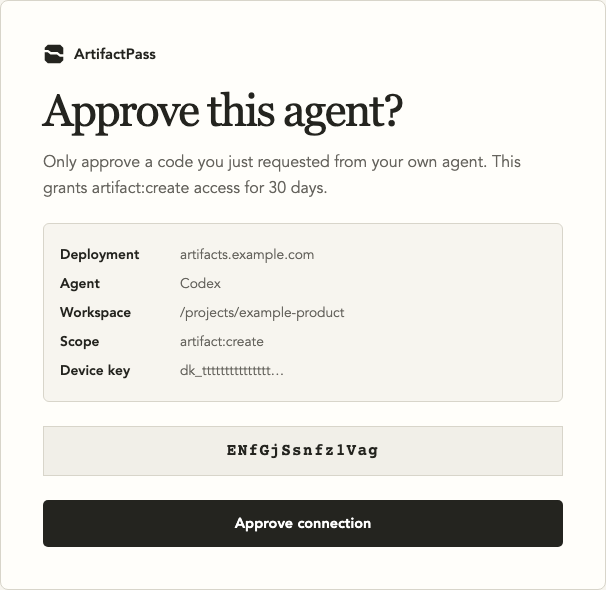
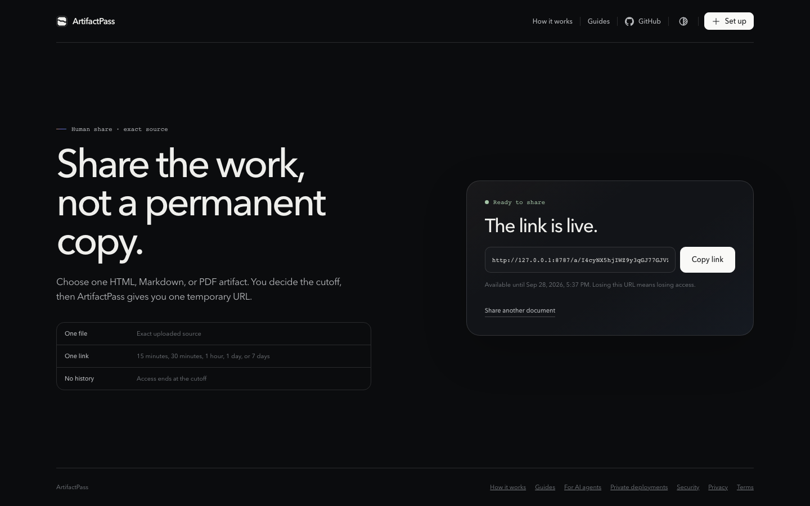
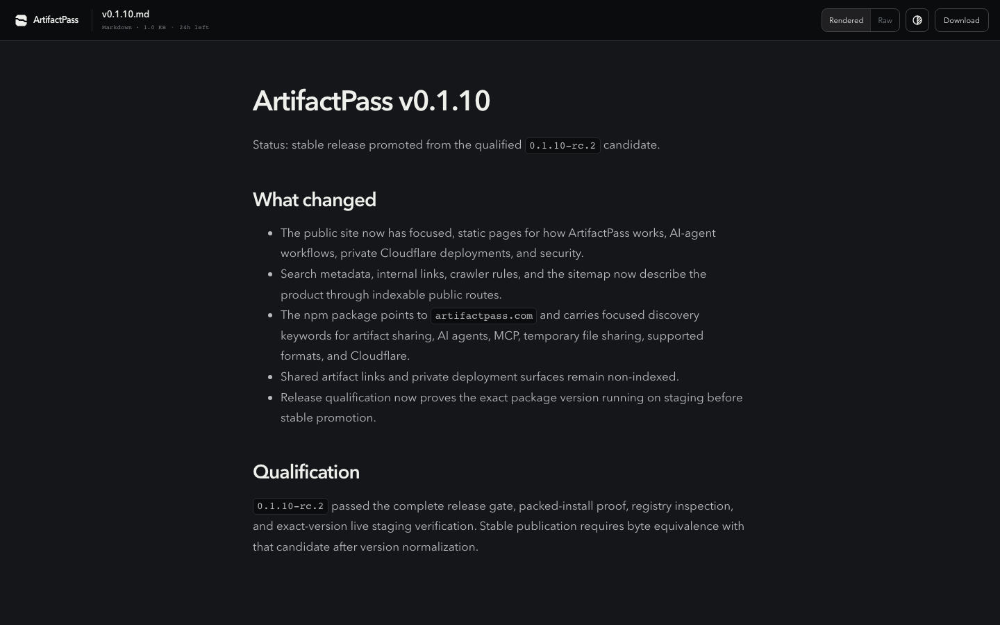

Chat can truncate a finished file, change its formatting, or turn HTML into an escaped code block. The recipient cannot easily verify that they received the original artifact.
Give the finished file a proper handoff
ArtifactPass lets the agent publish one completed file and return a temporary link. The recipient sees the filename, file type, size, preview, source when supported, and remaining lifetime.
| Handoff | What arrives | Verification |
|---|---|---|
| Paste into chat | A message representation | Hard to prove formatting and bytes stayed intact |
| Repository commit | A durable code change | Strong history, but too heavy for every review artifact |
| ArtifactPass link | The exact supported file | Preview, source, metadata, and explicit expiry in one viewer |
Set up ArtifactPass in the project
Open a terminal in the project where the agent should be allowed to publish. ArtifactPass setup is workspace-specific. It does not create one global file-sharing permission across every folder on the computer.
cd /path/to/your-project
pnpm dlx artifactpass
The installer asks which agent or editor this project uses. Named choices include Codex, Claude Code, Gemini CLI, Kimi Code, Cursor, VS Code with GitHub Copilot, and Antigravity. Those choices install the matching integration automatically. The generic MCP option prepares the configuration and skills, then prints their paths for manual registration.
Next, choose public ArtifactPass or enter the full URL for a private deployment supplied by an administrator. Setup installs the portable MCP server and agent skills. It does not upload a file and it does not sign the user in.
Connect the workspace on first use
Ask the agent to share a file, or ask it to connect ArtifactPass. The connection flow opens an approval page in the browser. If the browser opens in the wrong profile or does not open, the agent also prints the approval URL so it can be opened manually.
Public ArtifactPass uses Google or GitHub sign-in. A private deployment uses the Cloudflare Access method chosen by its administrator. The agent and browser show the same short approval code. Confirm that they match before approving.

Ask the agent to publish a finished file
Name the file and the lifetime. Public ArtifactPass supports 1 hour, 1 day, and 7 days. The agent resolves the file inside the approved workspace, validates the supported type and size, uploads it, then returns the share link.
Share ./report.md for 1 day.
Good prompts are simple because the capability is intentionally narrow. Use one file per share. If a draft is still changing, finish it first. The ArtifactPass link is a handoff, not a collaborative editing surface.

Complete a person or agent handoff
Agent to person
Open the returned URL in any browser. The recipient does not need an account. Send the link only to the intended reviewers because anyone holding it can open the artifact until it expires.

Agent to agent
Give the ArtifactPass link to another connected agent and ask it to read the artifact. The receiving agent retrieves the supported source instead of reconstructing the document from a pasted response.
Person to agent
A person can create a link from the browser upload page, then give that URL to a connected agent. This is useful when the file begins outside an agent workspace.
Change or inspect the setup
Use the configuration command to switch between public and private deployments. Use the doctor command to inspect the installation.
pnpm dlx artifactpass configure
pnpm dlx artifactpass doctor
What this workflow does not replace
Use Git for durable code history, a drive for permanent storage, and a collaboration tool for ongoing editing. ArtifactPass is for a finished artifact that needs to move cleanly between contexts for a limited time.
Expiry stops the ArtifactPass URL, but it cannot delete a downloaded copy. Agent access is also separate from link access. Disconnecting an agent stops future publishing; it does not retract a link that is already live.
Common questions
Does setup install ArtifactPass globally?
No. Setup applies to the current project so file approval and agent configuration stay scoped to the workspace where the command ran.
Does every recipient need ArtifactPass installed?
No. A person can open a live link in a normal browser. Installation is needed only when an agent should publish or read artifacts directly.
What file types are supported?
ArtifactPass supports Markdown, HTML, and PDF. The viewer and agent-readable representation depend on the file type and its security checks.
Can I use another MCP-compatible client?
Yes. Choose Other MCP client during setup. ArtifactPass prints the MCP configuration and skills location for manual registration.